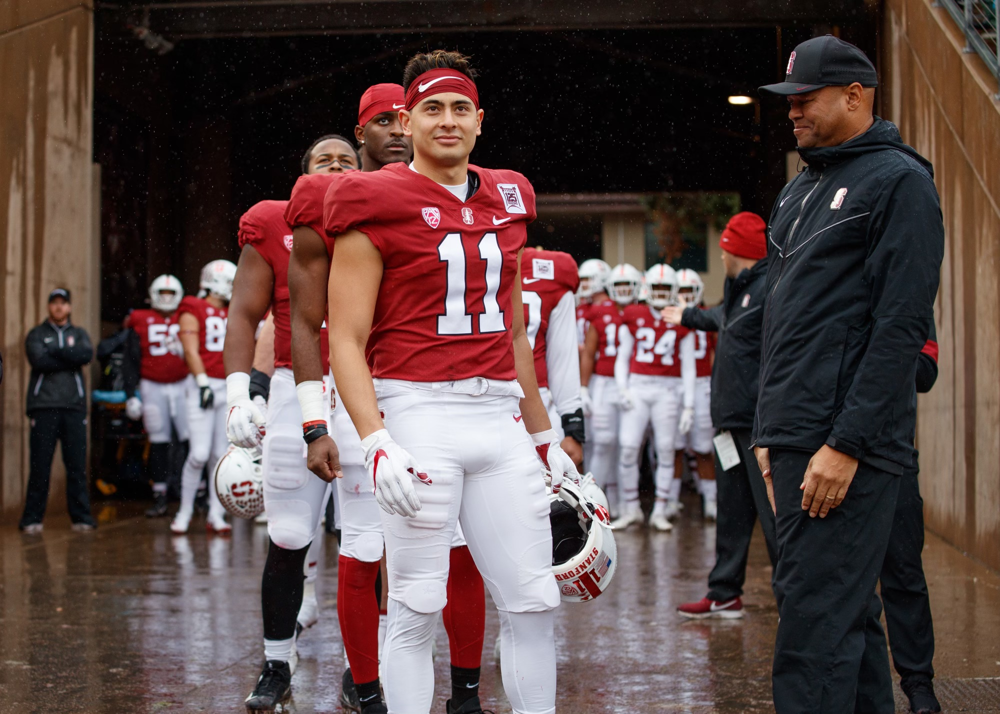

After graduating college into the pandemic, I prioritized personal and professional growth in order to reflect and redefine an identity that had previously been tethered to football. Working at early stage startups allowed me to prototype roles in different industries, ground myself as a professional, and craft a compass for my future.
Four years of early stage startup experience
Featured Work

Jellyman
Childish Gambino's boba shop in Silverlake, CA.
Learn More
Deer District All Access
NFT Campaign for the Milwaukee Bucks.
Learn More
Cellio
Regenerative stem-cell startup striving to prevent and cure blindness.
Learn More
Mechanical and Software Engineering capabilities
Technology leaders must be technical. Simple as that. Getting an MBA/MEng at Cal is my way of doubling down on the engineering skills I gained from Stanford and my own personal learning. I want to be able to build an MVP for just about anything and work with specialized engineers to actualize final products.
Featured Work
Spikeball Net
Machined a Spikeball net out of steel.
Learn More
harryschwartz.com
Developed this website from scratch.
Learn More
BS, Product Design from Stanford
In Stanford’s Design Thinking program I was trained to take a human-centered approach, focusing on "needfinding" to identify and define critical needs before developing solutions. This method ensures that the products I create are desired and used by people, achieving better product-market fit. Additionally, the program emphasizes practical skills in both digital UI/UX and physical prototyping, equipping me to bring ideas to life effectively. This holistic approach enhances my ability to innovate, collaborate, and succeed in diverse professional environments.
Featured Work
Yearbook
WebApp for Stanford Seniors in the Class of 2020 who didn't get to say goodbye to their
classmates due to the COVID-19 pandemic.
Learn More
Former D1 athlete
The mindset I developed as a Division I college football player directly translates into my work. As a teammate, I go above and beyond my assignments, take pride in attention to detail, and remain resilient through the inevitable waves of adversity. As a leader, I balance empathy and tough love to push my teammates to accomplish their goals. My superpower is propelling groups of high-caliber individuals to succeed as a team.
